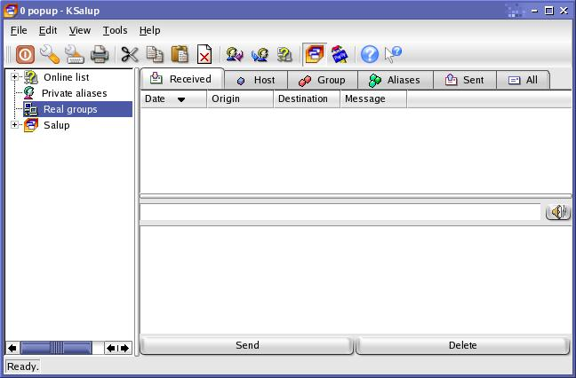
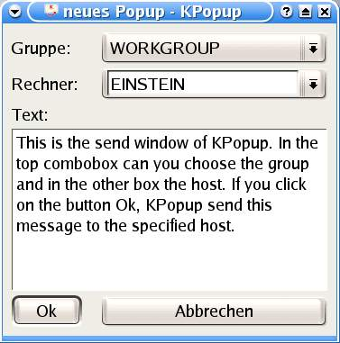
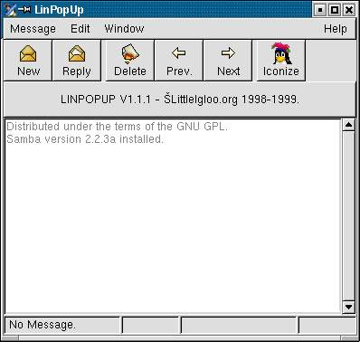
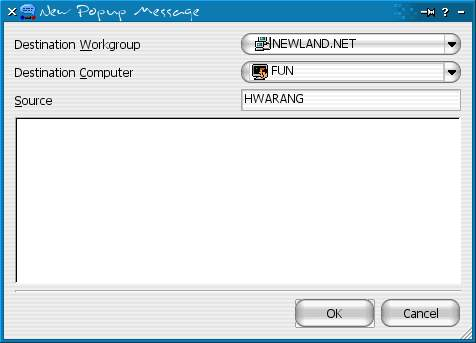
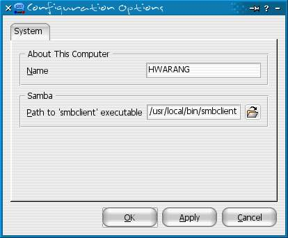
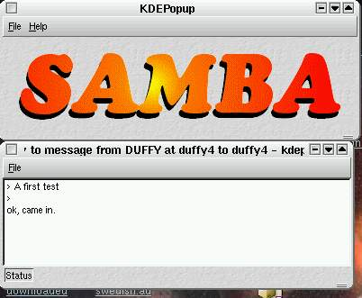

Uwaga: to tylko ramka - idz do strony glownej ASK ZATORZE
| Siec TCP/IP ||
Otoczenie Sieciowe || Poczta || Usnet || FTP || Konto Shellowe || Czat || IRC || Serwer PROXY |
Karteczki WinPopup - Samba/Unix Na komputerach z systemem Unix (m.in. Linux) do u¿ywania systemu karteczek WinPopup musi byæ zainstalowany pakiet Samba i odpowiednio skonfigurowany. Opcj± odpowiedzialna za karteczki jest "message command", definiuj±ca co zrobiæ z wiadomo¶ciami WinPopup. Programy do Karteczek WinPopup W systemach Samba/Unix mo¿emy np. wybraæ konfiguracje na wzór u¿ytkowników Windows czyli do u¿ywania programu do wysy³ania i odbierania karteczek dla X-Windows czyli okienek w systemach Unix. Jest to rozwi±zanie wygodne do domowego u¿ytku. KSalup Ten program do karteczek Winpopup zachwyca bogactwem dostêpnych funkcji. KSalup jest dedykowane dla ¶rodowiska graficznego KDE w wersjach 2.x i 3.x. Dodatkowo mimo prostoty obs³ugi program posiada bardzo dobr± dokumentacje dostêpn± pod adresem http://ksalup.sourceforge.net/doc/en/. Konfiguracja odbierania karteczek poprzez KSalup sprowadza siê do dopisania w pliku konfiguracyjnym Samby (z regu³y "smb.conf") w sekcji [global], taka liniê:
 Projekt wystartowa³ w roku 2000 i jest dalej rozwijany. Strona domowa programu Ksalup - http://ksalup.sourceforge.net/. KPopup Kolejny program do karteczek WinPopup który jest kojarzony ze ¶rodowiskiem KDE. Konfiguracja KPopup sprowadza siê do dopisania w pliku konfiguracyjnym Samby (z regu³y "smb.conf") w sekcji [global], taka liniê:
 Projekt wystartowa³ w roku 2000 i jest dalej rozwijany. Strona domowa programu KPopup - http://www.henschelsoft.de/. LinPopUp ¯eby karteczki by³y automatycznie odbierane przez program LinPopUp nale¿y dopisaæ w pliku konfiguracyjnym Samby (z regu³y "smb.conf") w sekcji [global], taka liniê:
Oczywi¶cie program LinPopup musi byæ zainstalowany na podanej ¶cie¿ce i byæ w danym momencie uruchomiony ¿eby móc odbieraæ karteczki, równie¿ Samba musi te¿ byæ w³±czona. sam program wygl±da jak na obrazku poni¿ej.  ¯eby wysy³aæ karteczki poprzez LinPopup nie jest potrzebne uruchamianie pakietu Samby ani dokonywania w jej konfiguracji ¿adnych wpisów, tyle ¿e wtedy tracimy mo¿liwo¶æ odbierania wiadomo¶ci. Projekt wystartowa³ w roku 1998 i nie jest rozwijany od roku 2000 skoñczywszy na wersji 1.2.0 ale jest dalej najpopularniejsza nak³adka graficzn± do karteczek Winpopup. Dawna strona domowa programu LinPopUp - http://linpopup2.sourceforge.net/ oraz obecna http://www.littleigloo.org/. KDE Popper Program ten w³a¶ciwie nazywa siê Popper ale ze wzglêdu na jego popularyzacje w ¶rodowisku KDE uzyska³ od niego ten przedrostek.  Konfiguracja sprowadza siê praktycznie tylko do ustawieñ w poni¿szym okienku. Podajemy tam tylko nazwê pod jak± bêd± widoczne nasze wiadomo¶ci w polu nadawcy oraz ¶cie¿kê do pliku smbclient z pakietu Samba.  Projekt wystartowa³ w roku 2002 i nie jest rozwijany od wtedy skoñczywszy na wersji 1.0. Strona domowa programu Popper - http://kpopper.sourceforge.net/, natomiast mo¿na go pobraæ z http://sourceforge.net/projects/kpopper. Kdepopup Kolejny program do karteczek WinPopup który jest kojarzony ze ¶rodowiskiem KDE. Konfiguracja Kdepopup sprowadza siê do dopisania w pliku konfiguracyjnym Samby (z regu³y "smb.conf") w sekcji [global], taka liniê: [global] Oczywi¶cie ¶cie¿ki do podanych plików musz± siê zgadzaæ i musi byæ w danym momencie uruchomiony Kdepopup ¿eby móc odbieraæ karteczki, równie¿ Samba musi te¿ byæ w³±czona. sam program wygl±da jak na obrazku poni¿ej.  Projekt wystartowa³ w roku 1999 i nie jest rozwijany od roku 2001 skoñczywszy na wersji 0.1.9. Strona domowa programu Kdepopup - http://www.franken.de/users/duffy1/rjakob/. Pozosta³e metody odbierania Mo¿na oczywi¶cie zdefiniowaæ w konfiguracji Samby inne zachowania systemu po nadej¶ciu karteczki WinPopup niz. przekazywanie do powy¿szych programów. ¯eby to wykonaæ nale¿y mieæ w pliku konfiguracyjnym Samby (z regu³y "smb.conf") w sekcji [global], zdefiniowane odpowiednio "message command". Jest to rozwi±zanie o tyle ciekawe, ¿e z taka wiadomo¶ci± mo¿emy zrobiæ dos³ownie wszystko, poni¿ej jest parê ciekawych przyk³adów.
Wysy³anie karteczek z konsoli Oczywi¶cie Samba musi byæ uruchomiona. teraz jak kto¶ wy¶le nam wiadomo¶æ dotrze ona do nas w takiej postaci jak± zdefiniowali¶my. smbclient -M Z konsoli Unix mo¿emy tez wys³aæ wiadomo¶æ WinPopup za pomoc± komendy z pakietu Samba "smbclient", najlepiej wykonaæ to tak: echo "tekst wiadomosci" | smbclient -U nasza_ksywa -M typek Mo¿na pomin±æ opcje "-U nasza_ksywa" i wtedy jako nadawca bêdzie widnia³a nazwa u¿ytkownika na jakiej jeste¶my zalogowani w systemie. Opcja "-M typek" pozwala nam na wpisane tylko nazwy netbiosowej komputera lub innej zarejestrowanej nazwy do odbierania karteczek WinPopup. Lista nazw na jakie mo¿na wys³aæ WinPopup ¯eby wy¶wietliæ listê
zarejestrowanych nazw dla WinPopup na zdalnym komputerze u¿yj komendy: Komenda, z pakietu Samba, nmblookup -A Adres_IP wy¶wietla zarejestrowane wszystkie rodzaje nazw na zdalnych komputerach. Posiadaj± one swój typ okre¶lany odpowiednimi kodami, które s± przypisane do odpowiednich rodzajów us³ug. Dla WinPopup przypisano w³a¶nie kod <03>. smbpopupip - wys³anie karteczki po adresie IP Mimo ¿e istnieje opcja w smbclient umo¿liwiaj±ca wysy³anie przy u¿yciu adresu IP (opcja -I), musi ona byæ równocze¶nie zaznaczona nazwa netbiosowa (u¿ycie opcji -M). ¯eby omin±æ ten "problem" i wysy³aæ karteczki tylko podaj±c adres IP, wystarczy u¿yæ poni¿szego skryptu smbpopupip: ---------------------------------------------------------------------------------- smbpopupwg - karteczki do ca³ej grupy roboczej Mimo ¿e nie istnieje opcja w smbclient umo¿liwiaj±ca wysy³anie karteczek winpopup do ca³ej grupy roboczej, mo¿na to uczyniæ za pomoc± poni¿szego skryptu smbpopupg:
|